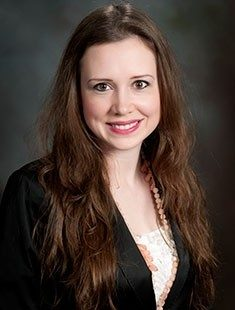

Intro Comm Research(MW) 4:00-5:15. Projected Grade: B
Professor: Dr. Adrienne Holz Ivory
Contact information: Phone:540-231-1671 Email: aivory@vt.edu.
Dr. Ivory is in the Department of Communication. Her education includes Ph.D. from Virginia Tech, M.A.from Virginia Tech, B.A. from University of North Carolina at Chapel Hill. Her research interests are "Virtual Environment-Based Field Research on Economic and Consumer Behavior, Decision-Making, and Social Interaction. Her expertise includes health communication, media Effects, media portrayals, social impact of new communication technology and entertainment media content.
Course Description:
This course looks at the wide world of research and how to properly conduct it. During this course you learn how to properly research and study a partuclar topic. How to condcut a focus group and conduct a survey study. You and a group choose a topic at the beginning of the semster and that topic will stay with you through all three projects. This course has three projects and four exams along with in-class particpation. The course is weighted as Examination 1: 12%, Examination 2: 12%, Examination 3: 12%, and Final Examination(Cumulative): 20%. Group Projects: Annotated Bibliography Project: 10%, Focus Group Project: 12% and Survey Project: 10%. In-class particpation is huge in this course. There is an assignment every class that goes towards your overall particpation which is 10% of the course. There are several guest speakers throughtout the semester. This course is A-F normal scale. The required textbook is Wimmer, R. D., & Dominick, J. R. (2013). Mass media research: An introduction (10th ed.). Boston, MA: Thompson Wadsworth.
Course Opinion:
Research is orginal and interactive. I haven't really ever been in a class like this one. I never knew how in-depth research was but there are many different levels. Although this is not my favorite course and I don't love all the exams; I do love how interactive it is. A lot of the big stuff that we learn in this course is applied in the field with projects. Conducting the focus group was enjoyable. Lastly, this course is orginal in its material. I don't think I have ever had a course with this type of material and I think that interesting.